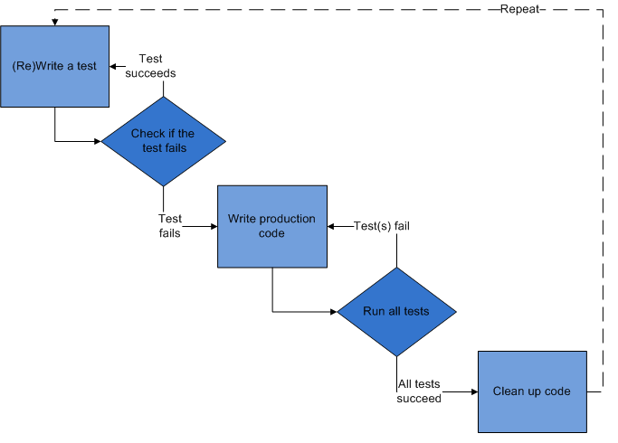

.center.middle # Test-drevet Webutvikling _Et kurs levert av Itera Consulting_ --- # Introduction av Itera Consulting Bla bla.. her kommer tommy med sine slides om selskapet... --- # Agenda 1. Testing intro - Hvorfor tester vi? - Ulike Testtyper - Flere nivåer med testing 2. Play framework - Introduksjon til rammeverket - Praktisk eksempel (følger med på minnestick) - Rask presentasjon av Selenium og Selenese - Vise ulike testtyper - Installasjon og oppsett av første prosjekt 3. Test-driven development - Introduksjon til TDD - Kodeeksempel 4. Test-drevet Webutvikling - Introduksjon TDWD - Introdusere av oppgaven - Teste kontrollere - Teste modeller - Teste perisistering - Teste validering - Teste viewet --- # Testing intro Et vakkert testbilde her... --- # Hvorfor tester vi? - Sikre at koden *løser problemet* vårt - Sikre at koden *ikke* gjør noe annet - Beskytte koden mot **bieffekter** ved fremtidige endringer - Kan refaktorere på en tryggere måte - Fungerer som dokumentasjon - Gir økt kodekvalitet - Finner bugs tidligere (billigere å rette idag enn om 2 uker) - Mindre debugging - White-box vs. black-box ### God testpraksis - Automatiserte tester - Testene kjøres ved insjekk av ny kode - Testene er raske - Testene kan kjøres i vilkårlig rekkefølge --- # Enhetstester.red.bold[*] .footnote[.red.bold[*] Tilhører kategorien white-box testing] <div class="box happy"> Validerer at *isolerte enheter* i applikasjonen fungerer slik de skal. </div> - Tester små biter av koden - Tester *betinget* funksjonalitet - *Isolerte* tester. - "*mocker*" avhengigheter (f.eks in-mem-db) - Dersom koden er vanskelig å teste? Et tegn på dårlig design.. <div class="code"> public class TestFoobar{ @Before public void setUp() throws Exception { // Kode som kjøres før hver test } @Test public void shouldSumCorrectly() { assertEquals(2, 1+2); } } </div> --- # Funksjonelle tester.red.bold[*] .footnote[.red.bold[*] Form for black-box testing] <div class="box happy"> Fokuserer på å teste en spesifikk funksjon i applikasjonen. </div> ### Hvorfor? - Verifiserer at grensesnitt følger kontrakten. - Kan fortelle oss at "noe i koden" brakk - Teste koden på tilsvarende måte som den blir konsumert. ### Eksempler i WEB-app - Teste at kontrollerene håndterer forespørsler korrekt. - Ble brukeren redirigert til riktig side? - Er brukeren autentisert korrekt? --- # Akseptansetester.red.bold[*] .footnote[.red.bold[*] Black-box testing] <div class="box happy"> Sikre at systemet tilfredstiller de funksjonelle kravene som er satt til løsningen. </div> ### Hvorfor? - Tester systemetet fra *brukerens* perspektiv - Høy-nivå tester som verifiserer hele brukerhistorier - Sikre at systemet løser oppgavene vi ønsker at det skal løse, uten å fokuserer på hvordan oppgavene løses. ### Eksempler i en WEB-applikasjon - Verifisere at en HTML-form finnes. - Verifisere at det er mulig å legge til en kommentar. - Verifisere at brukeren havner på forsiden etter å lagt til en kommentar. --- .center # Flere nivåer med testing --- # Play framework - Bakgrunn - Arkitektur - todo: Inkluder et bilde --- # Play, fordeler og ulemper <div class="happy box"> .label[Fordeler] - Inkluderer hele webstacken - Følger _ikke_ servlet-spec - Automatisk rekompilering - Konvensjon over konfigurasjon </div> <div class="angry box"> .label[Ulemper] - Begrenset community </div> .center[Så hvorfor har vi valgt Play i dag?] --- # Demo hello-world-todo, work in progress --- # Oppsett av play <div class="moody box"> .label[Win] - Pakk ut play-1.2.4.zip til c:\dev\play-1.2.4 - Startmeny -> Run/Kjør -> Skriv cmd (og trykk enter) - Skriv cd c:\dev\play-1.2.4 (og trykk enter) - Skriv play (og trykk enter), får du ASCII-art tilbake så er alt OK </div> <div class="happy box"> .label[Linux/Mac] - Pakk ut play-1.2.4.zip til hjemmekatalog - Åpne en terminal, cd play-1.2.4 - play, får du ASCII-art tilbake så er alt OK </div> <div class="angry box"> .label.problem[Problemer?] - Java må være installert, Play leter etter java på path eller gjennom variablen JAVA_HOME - Python-issues » team opp med en annen - Andre problemer? » Hør med en av oss </div> --- # Test-driven development (TDD) ### Hva? 1. Skriv en enhetstest, som feiler 2. Skriv kode som fikser testen 3. Refaktorer koden 4. Repeter fra 1. til du er ferdig. ### Hvorfor? - Sikrer at vi tester koden vår - Ikke disiplinert nok? - Mangel på tid, fredag ettermiddag.. etc - Vi har jo *manuelt* testet at koden virker?? - Verifikasjon av oppførsel - Dokumentasjon - Testbar kode <div class="box happy center"> **Iterere over designet konstant, hvor vi stadig gjør små forbedringer.** </div> --- .cente # TDD prosessen  .small[http://en.wikipedia.org/wiki/File:Test-driven_development.PNG] --- # Test-drevet webutvikling ## Intro TDWD --- # Introduksjon til oppgave todo, work in progress --- # Iterasjon 2 <div class="moody box"> .label[Hva skal implementeres?] Når jeg åpner "/todo/add" skal tittel på siden være "Legg til en todo" </div> <div class="moody box"> .label[Tips] - Selenium egner seg til testing av HTML-respons, opprett derfor test/Todo.test.html - Ta en titt på Selenese sin assertTitle() - Kjør testen via http://localhost:9000/@tests - Fiks feilende test (opprett view i app/views/todo/add.html) </div> open('xyz') assertTitle('wzy') --- # Iterasjon 3 <div class="moody box"> .label[Hva skal implementeres?] - Når jeg åpner "/todo/add" skal jeg bli presentert med en form som har input-elementer for "beskrivelse" og "prioritet" - Formen skal poste til "/todo/create" og ha en submit-knapp </div> <div class="moody box"> .label[Tips] - Selenium egner seg til testing av HTML-respons, så fortsett på test/Todo.test.html - assertElementPresent('css=cssSelector') kan brukes til å kreve at HTML-elementer er tilstede - Kjør testen via http://localhost:9000/@tests - Fiks feilende test (oppdater view) </div> .html <form action="/my/action" method="POST" id="myForm" class="aForm"></form> Et form-element som over kan hentes med følende css-selectors: .html "form", "form.aForm", "#myForm", "form#myForm", "form[method=POST]" --- # Iterasjon 4 <div class="moody box"> .label[Hva skal implementeres?] - Klassen models.Todo skal kunne opprettes med en tekstlig beskrivelse (description) og en prioritet (priority). Dette skal lagres som instansvariabler. </div> <div class="moody box"> .label[Tips] - todo: forklar public-variabler i Play - todo: forklar Todo-modellen - Lag en unit-test som lager en Todo og verifiserer at properties blir satt - Se at testen feiler - Opprett klassen models.Todo og implementer nødvendig funksjonalitet i klassens konstruktør </div> --- # Iterasjon 5 <div class="moody box"> .label[Hva skal implementeres?] Instanser av modellen - inkludert alle datafelter - skal kunne lagres til database. </div> <div class="moody box"> .label[Tips] - Opprett unit-test test/models/TodoTest.java som lager en Todo, kaller save() på instansen og ser om den har blitt lagret i databasen. - Fiks feilende test ved å extende modellen med "Model", og annoter klassen med @Entity - Husk at tester skal kjøres i isolasjon, bruk JUnits @Before og Fixtures.deleteDatabase() </div> @Test // JUnit public void shouldPersistTodo() { // opprett en todo og la Hibernate lagre den med save() // hent alle todos med Todo.findAll() // bruk assertEquals() til å verifisere at antall todos er som forventet } // Modell: @Entity // Hibernate-annotering public class Todo extends Model { // Model er en hjelpeklasse fra Play // ... } --- # Iterasjon 6 todo: functional --- # Iterasjon 7 todo: functional --- # Iterasjon 8 todo: functional --- # Iterasjon 9 todo: functional --- # Iterasjon 10 todo: functional --- # Iterasjon 11 <div class="moody box"> .label[Hva skal implementeres?] Verifisere at errors er vist i view </div> <div class="moody box"> .label[Tips] - todo: work in progress </div> ---